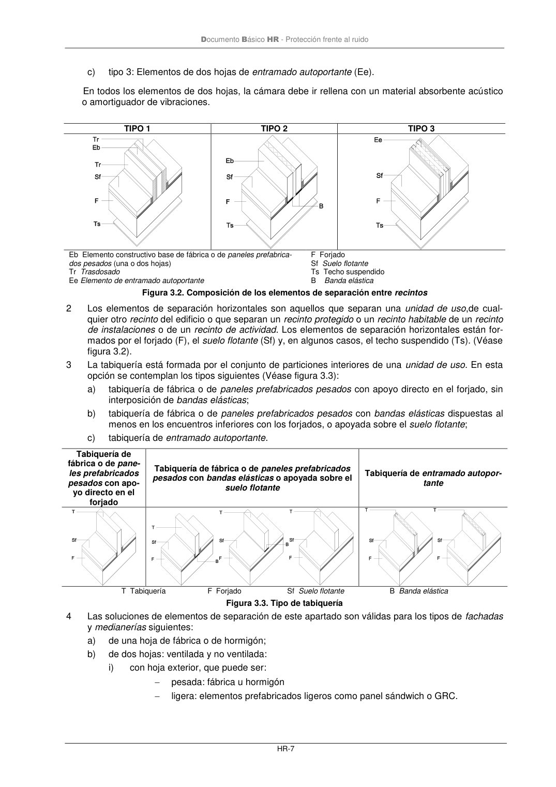

DB-HR · Fragmento de PDF p12 · versión 2019-12-20 · capa oficial
Formatos: JSON compacto · Markdown · PDF fuente
Ámbito del documento · texto del ámbito · documento y tablas
ID técnico a0039 · PDF pág. 12-14 · jerarquía no validada por persona · no es capítulo: sin_linea_de_encabezado · padre: raíz · literal original en el contenido: «3.1.2.3 Elementos de separación 3.1.2.3.1 Definición y composición de los elementos de separación»
3.1.2.3 Elementos de separación 3.1.2.3.1 Definición y composición de los elementos de separación 3.1.2.3.1 Definición y composición de los elementos de separación 1 Los elementos de separación verticales son aquellas particiones verticales que separan una unidad de uso de cualquier recinto del edificio o que separan recintos protegidos o habitables de recintos de instalaciones o de actividad (Véase figura 3.2). En esta opción se contemplan los siguientes ti- pos: a) tipo 1: Elementos compuestos por un elemento base de una o dos hojas de fábrica, hormigón o paneles prefabricados pesados (Eb), sin trasdosado o con un trasdosado por ambos lados (Tr); b) tipo 2: Elementos de dos hojas de fábrica o paneles prefabricado pesados (Eb),con bandas elásticas en su perímetro dispuestas en los encuentros de, al menos, una de las hojas con for- jados, suelos, techos, pilares y fachadas; Documento Básico HR - Protección frente al ruido HR-7 c) tipo 3: Elementos de dos hojas de entramado autoportante (Ee). En todos los elementos de dos hojas, la cámara debe ir rellena con un material absorbente acústico o amortiguador de vibraciones. TIPO 1 TIPO 2 TIPO 3 Eb Elemento constructivo base de fábrica o de paneles prefabrica- dos pesados (una o dos hojas) Tr Trasdosado Ee Elemento de entramado autoportante F Forjado Sf Suelo flotante Ts Techo suspendido B Banda elástica Figura 3.2. Composición de los elementos de separación entre recintos 2 Los elementos de separación horizontales son aquellos que separan una unidad de uso,de cual- quier otro recinto del edificio o que separan un recinto protegido o un recinto habitable de un recinto de instalaciones o de un recinto de actividad. Los elementos de separación horizontales están for- mados por el forjado (F), el suelo flotante (Sf) y, en algunos casos, el techo suspendido (Ts). (Véase figura 3.2). 3 La tabiquería está formada por el conjunto de particiones interiores de una unidad de uso. En esta opción se contemplan los tipos siguientes (Véase figura 3.3): a) tabiquería de fábrica o de paneles prefabricados pesados con apoyo directo en el forjado, sin interposición de bandas elásticas; b) tabiquería de fábrica o de paneles prefabricados pesados con bandas elásticas dispuestas al menos en los encuentros inferiores con los forjados, o apoyada sobre el suelo flotante; c) tabiquería de entramado autoportante. Tabiquería de fábrica o de pane- les prefabricados pesados con apo- yo directo en el forjado Tabiquería de fábrica o de paneles prefabricados pesados con bandas elásticas o apoyada sobre el suelo flotante Tabiquería de entramado autopor- tante T Tabiquería F Forjado Sf Suelo flotante B Banda elástica Figura 3.3. Tipo de tabiquería 4 Las soluciones de elementos de separación de este apartado son válidas para los tipos de fachadas y medianerías siguientes: a) de una hoja de fábrica o de hormigón; b) de dos hojas: ventilada y no ventilada: i) con hoja exterior, que puede ser: − pesada: fábrica u hormigón − ligera: elementos prefabricados ligeros como panel sándwich o GRC. Documento Básico HR - Protección frente al ruido HR-8 ii) con una hoja interior, que puede ser de: − fábrica, hormigón o paneles prefabricados pesados, ya sea con apoyo directo en el forjado, en el suelo flotante o con bandas elásticas; − entramado autoportante.


PDF fuente redistribuible: copia fiel enlazada en esta página (SHA256 verificado).